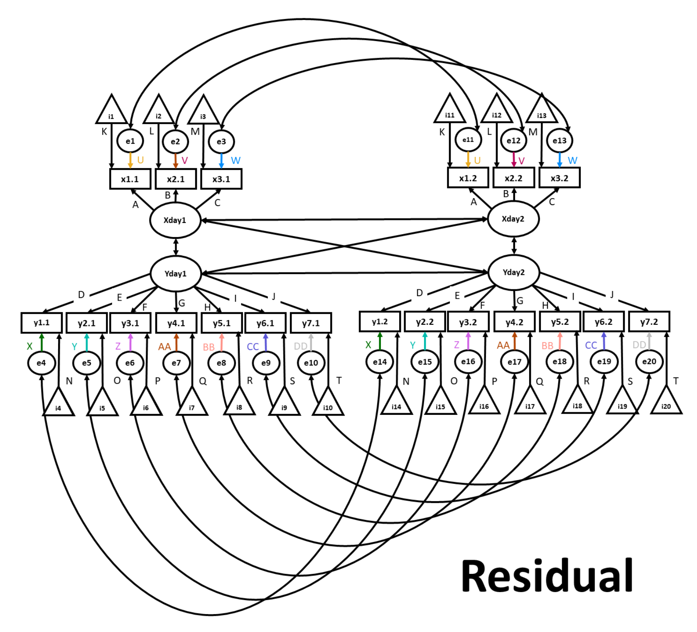

24.9 Invarianza degli errori
24.9.1 Definizione del modello
Passiamo ora ad applicare l’insieme più rigoroso di vincoli al modello di invarianza degli errori. In questo modello, oltre ai vincoli applicati al modello scalare, imponiamo il vincolo per cui i termini residui d’errore devono essere uguali all’interno di ciascuna rilevazione (wave). Ancora una volta, lo facciamo applicando una singola etichetta a gruppi di item che desideriamo vincolare (ad esempio psp1.7 ~~ psp1u*psp1.7). Nella sintassi, questo è simile a quello che abbiamo fatto in precedenza con le covarianze; tuttavia, questa volta ogni variabile è covariata con se stessa.

FIGURA 24.4: Invarianza dei termini erratici.
residual.v1 <-
"
# Residual error constrained across waves
psp1.7 ~~ psp1u*psp1.7
psp1.8 ~~ psp1u*psp1.8
psp1.9 ~~ psp1u*psp1.9
psp1.10 ~~ psp1u*psp1.10
psp1.11 ~~ psp1u*psp1.11
psp2.7 ~~ psp2u*psp2.7
psp2.8 ~~ psp2u*psp2.8
psp2.9 ~~ psp2u*psp2.9
psp2.10 ~~ psp2u*psp2.10
psp2.11 ~~ psp2u*psp2.11
psp3.7 ~~ psp3u*psp3.7
psp3.8 ~~ psp3u*psp3.8
psp3.9 ~~ psp3u*psp3.9
psp3.10 ~~ psp3u*psp3.10
psp3.11 ~~ psp3u*psp3.11
ssa1.7 ~~ ssa1u*ssa1.7
ssa1.8 ~~ ssa1u*ssa1.8
ssa1.9 ~~ ssa1u*ssa1.9
ssa1.10 ~~ ssa1u*ssa1.10
ssa1.11 ~~ ssa1u*ssa1.11
ssa2.7 ~~ ssa2u*ssa2.7
ssa2.8 ~~ ssa2u*ssa2.8
ssa2.9 ~~ ssa2u*ssa2.9
ssa2.10 ~~ ssa2u*ssa2.10
ssa2.11 ~~ ssa2u*ssa2.11
ssa3.7 ~~ ssa3u*ssa3.7
ssa3.8 ~~ ssa3u*ssa3.8
ssa3.9 ~~ ssa3u*ssa3.9
ssa3.10 ~~ ssa3u*ssa3.10
ssa3.11 ~~ ssa3u*ssa3.11
ssa4.7 ~~ ssa4u*ssa4.7
ssa4.8 ~~ ssa4u*ssa4.8
ssa4.9 ~~ ssa4u*ssa4.9
ssa4.10 ~~ ssa4u*ssa4.10
ssa4.11 ~~ ssa4u*ssa4.11
ssa5.7 ~~ ssa5u*ssa5.7
ssa5.8 ~~ ssa5u*ssa5.8
ssa5.9 ~~ ssa5u*ssa5.9
ssa5.10 ~~ ssa5u*ssa5.10
ssa5.11 ~~ ssa5u*ssa5.11
ssa6.7 ~~ ssa6u*ssa6.7
ssa6.8 ~~ ssa6u*ssa6.8
ssa6.9 ~~ ssa6u*ssa6.9
ssa6.10 ~~ ssa6u*ssa6.10
ssa6.11 ~~ ssa6u*ssa6.11
ssa7.7 ~~ ssa7u*ssa7.7
ssa7.8 ~~ ssa7u*ssa7.8
ssa7.9 ~~ ssa7u*ssa7.9
ssa7.10 ~~ ssa7u*ssa7.10
ssa7.11 ~~ ssa7u*ssa7.11
"
residual.model <- paste(metric.v1, errorstructure, scalar.v1, residual.v1, sep = " ", collapse = NULL)24.9.2 Output del modello
residual.fit <- cfa(residual.model,
data = model.test.dat,
estimator = "MLR",
se = "robust",
missing = "ML",
std.lv = TRUE
)
summary(residual.fit,
fit.measures = TRUE,
standardized = TRUE,
ci = TRUE,
rsquare = TRUE
)
#> lavaan 0.6-11 ended normally after 112 iterations
#>
#> Estimator ML
#> Optimization method NLMINB
#> Number of model parameters 295
#> Number of equality constraints 210
#>
#> Number of observations 251
#> Number of missing patterns 27
#>
#> Model Test User Model:
#> Standard Robust
#> Test Statistic 2213.647 1862.554
#> Degrees of freedom 1240 1240
#> P-value (Chi-square) 0.000 0.000
#> Scaling correction factor 1.189
#> Yuan-Bentler correction (Mplus variant)
#>
#> Model Test Baseline Model:
#>
#> Test statistic 15377.626 12165.693
#> Degrees of freedom 1225 1225
#> P-value 0.000 0.000
#> Scaling correction factor 1.264
#>
#> User Model versus Baseline Model:
#>
#> Comparative Fit Index (CFI) 0.931 0.943
#> Tucker-Lewis Index (TLI) 0.932 0.944
#>
#> Robust Comparative Fit Index (CFI) 0.946
#> Robust Tucker-Lewis Index (TLI) 0.947
#>
#> Loglikelihood and Information Criteria:
#>
#> Loglikelihood user model (H0) -12741.085 -12741.085
#> Scaling correction factor 0.515
#> for the MLR correction
#> Loglikelihood unrestricted model (H1) -11634.262 -11634.262
#> Scaling correction factor 1.227
#> for the MLR correction
#>
#> Akaike (AIC) 25652.170 25652.170
#> Bayesian (BIC) 25951.833 25951.833
#> Sample-size adjusted Bayesian (BIC) 25682.373 25682.373
#>
#> Root Mean Square Error of Approximation:
#>
#> RMSEA 0.056 0.045
#> 90 Percent confidence interval - lower 0.052 0.041
#> 90 Percent confidence interval - upper 0.060 0.049
#> P-value RMSEA <= 0.05 0.005 0.990
#>
#> Robust RMSEA 0.049
#> 90 Percent confidence interval - lower 0.044
#> 90 Percent confidence interval - upper 0.053
#>
#> Standardized Root Mean Square Residual:
#>
#> SRMR 0.059 0.059
#>
#> Parameter Estimates:
#>
#> Standard errors Sandwich
#> Information bread Observed
#> Observed information based on Hessian
#>
#> Latent Variables:
#> Estimate Std.Err z-value P(>|z|) ci.lower ci.upper
#> PSP.7 =~
#> psp1.7 (psp1) 1.679 0.100 16.781 0.000 1.483 1.875
#> psp2.7 (psp2) 1.979 0.049 40.388 0.000 1.883 2.075
#> psp3.7 (psp3) 1.860 0.057 32.491 0.000 1.748 1.972
#> PSP.8 =~
#> psp1.8 (psp1) 1.679 0.100 16.781 0.000 1.483 1.875
#> psp2.8 (psp2) 1.979 0.049 40.388 0.000 1.883 2.075
#> psp3.8 (psp3) 1.860 0.057 32.491 0.000 1.748 1.972
#> PSP.9 =~
#> psp1.9 (psp1) 1.679 0.100 16.781 0.000 1.483 1.875
#> psp2.9 (psp2) 1.979 0.049 40.388 0.000 1.883 2.075
#> psp3.9 (psp3) 1.860 0.057 32.491 0.000 1.748 1.972
#> PSP.10 =~
#> psp1.10 (psp1) 1.679 0.100 16.781 0.000 1.483 1.875
#> psp2.10 (psp2) 1.979 0.049 40.388 0.000 1.883 2.075
#> psp3.10 (psp3) 1.860 0.057 32.491 0.000 1.748 1.972
#> PSP.11 =~
#> psp1.11 (psp1) 1.679 0.100 16.781 0.000 1.483 1.875
#> psp2.11 (psp2) 1.979 0.049 40.388 0.000 1.883 2.075
#> psp3.11 (psp3) 1.860 0.057 32.491 0.000 1.748 1.972
#> SSA.7 =~
#> ssa1.7 (ss1f) 1.035 0.035 29.404 0.000 0.966 1.104
#> ssa2.7 (ss2f) 1.137 0.034 33.899 0.000 1.071 1.203
#> ssa3.7 (ss3f) 1.151 0.036 32.244 0.000 1.081 1.221
#> ssa4.7 (ss4f) 1.128 0.034 33.349 0.000 1.062 1.194
#> ssa5.7 (ss5f) 1.114 0.037 29.785 0.000 1.041 1.187
#> ssa6.7 (ss6f) 0.921 0.049 18.772 0.000 0.825 1.018
#> ssa7.7 (ss7f) 0.683 0.051 13.273 0.000 0.582 0.784
#> SSA.8 =~
#> ssa1.8 (ss1f) 1.035 0.035 29.404 0.000 0.966 1.104
#> ssa2.8 (ss2f) 1.137 0.034 33.899 0.000 1.071 1.203
#> ssa3.8 (ss3f) 1.151 0.036 32.244 0.000 1.081 1.221
#> ssa4.8 (ss4f) 1.128 0.034 33.349 0.000 1.062 1.194
#> ssa5.8 (ss5f) 1.114 0.037 29.785 0.000 1.041 1.187
#> ssa6.8 (ss6f) 0.921 0.049 18.772 0.000 0.825 1.018
#> ssa7.8 (ss7f) 0.683 0.051 13.273 0.000 0.582 0.784
#> SSA.9 =~
#> ssa1.9 (ss1f) 1.035 0.035 29.404 0.000 0.966 1.104
#> ssa2.9 (ss2f) 1.137 0.034 33.899 0.000 1.071 1.203
#> ssa3.9 (ss3f) 1.151 0.036 32.244 0.000 1.081 1.221
#> ssa4.9 (ss4f) 1.128 0.034 33.349 0.000 1.062 1.194
#> ssa5.9 (ss5f) 1.114 0.037 29.785 0.000 1.041 1.187
#> ssa6.9 (ss6f) 0.921 0.049 18.772 0.000 0.825 1.018
#> ssa7.9 (ss7f) 0.683 0.051 13.273 0.000 0.582 0.784
#> SSA.10 =~
#> ssa1.10 (ss1f) 1.035 0.035 29.404 0.000 0.966 1.104
#> ssa2.10 (ss2f) 1.137 0.034 33.899 0.000 1.071 1.203
#> ssa3.10 (ss3f) 1.151 0.036 32.244 0.000 1.081 1.221
#> ssa4.10 (ss4f) 1.128 0.034 33.349 0.000 1.062 1.194
#> ssa5.10 (ss5f) 1.114 0.037 29.785 0.000 1.041 1.187
#> ssa6.10 (ss6f) 0.921 0.049 18.772 0.000 0.825 1.018
#> ssa7.10 (ss7f) 0.683 0.051 13.273 0.000 0.582 0.784
#> SSA.11 =~
#> ssa1.11 (ss1f) 1.035 0.035 29.404 0.000 0.966 1.104
#> ssa2.11 (ss2f) 1.137 0.034 33.899 0.000 1.071 1.203
#> ssa3.11 (ss3f) 1.151 0.036 32.244 0.000 1.081 1.221
#> ssa4.11 (ss4f) 1.128 0.034 33.349 0.000 1.062 1.194
#> ssa5.11 (ss5f) 1.114 0.037 29.785 0.000 1.041 1.187
#> ssa6.11 (ss6f) 0.921 0.049 18.772 0.000 0.825 1.018
#> ssa7.11 (ss7f) 0.683 0.051 13.273 0.000 0.582 0.784
#> Std.lv Std.all
#>
#> 1.679 0.859
#> 1.979 0.948
#> 1.860 0.908
#>
#> 1.679 0.859
#> 1.979 0.948
#> 1.860 0.908
#>
#> 1.679 0.859
#> 1.979 0.948
#> 1.860 0.908
#>
#> 1.679 0.859
#> 1.979 0.948
#> 1.860 0.908
#>
#> 1.679 0.859
#> 1.979 0.948
#> 1.860 0.908
#>
#> 1.035 0.873
#> 1.137 0.898
#> 1.151 0.902
#> 1.128 0.900
#> 1.114 0.879
#> 0.921 0.750
#> 0.683 0.625
#>
#> 1.035 0.873
#> 1.137 0.898
#> 1.151 0.902
#> 1.128 0.900
#> 1.114 0.879
#> 0.921 0.750
#> 0.683 0.625
#>
#> 1.035 0.873
#> 1.137 0.898
#> 1.151 0.902
#> 1.128 0.900
#> 1.114 0.879
#> 0.921 0.750
#> 0.683 0.625
#>
#> 1.035 0.873
#> 1.137 0.898
#> 1.151 0.902
#> 1.128 0.900
#> 1.114 0.879
#> 0.921 0.750
#> 0.683 0.625
#>
#> 1.035 0.873
#> 1.137 0.898
#> 1.151 0.902
#> 1.128 0.900
#> 1.114 0.879
#> 0.921 0.750
#> 0.683 0.625
#>
#> Covariances:
#> Estimate Std.Err z-value P(>|z|) ci.lower ci.upper
#> .psp1.7 ~~
#> .psp1.8 (psp1) 0.622 0.180 3.452 0.001 0.269 0.975
#> .psp1.9 (psp1) 0.622 0.180 3.452 0.001 0.269 0.975
#> .psp1.10 (psp1) 0.622 0.180 3.452 0.001 0.269 0.975
#> .psp1.11 (psp1) 0.622 0.180 3.452 0.001 0.269 0.975
#> .psp1.8 ~~
#> .psp1.9 (psp1) 0.622 0.180 3.452 0.001 0.269 0.975
#> .psp1.10 (psp1) 0.622 0.180 3.452 0.001 0.269 0.975
#> .psp1.11 (psp1) 0.622 0.180 3.452 0.001 0.269 0.975
#> .psp1.9 ~~
#> .psp1.10 (psp1) 0.622 0.180 3.452 0.001 0.269 0.975
#> .psp1.11 (psp1) 0.622 0.180 3.452 0.001 0.269 0.975
#> .psp1.10 ~~
#> .psp1.11 (psp1) 0.622 0.180 3.452 0.001 0.269 0.975
#> .psp2.7 ~~
#> .psp2.8 (psp2) 0.160 0.099 1.613 0.107 -0.035 0.355
#> .psp2.9 (psp2) 0.160 0.099 1.613 0.107 -0.035 0.355
#> .psp2.10 (psp2) 0.160 0.099 1.613 0.107 -0.035 0.355
#> .psp2.11 (psp2) 0.160 0.099 1.613 0.107 -0.035 0.355
#> .psp2.8 ~~
#> .psp2.9 (psp2) 0.160 0.099 1.613 0.107 -0.035 0.355
#> .psp2.10 (psp2) 0.160 0.099 1.613 0.107 -0.035 0.355
#> .psp2.11 (psp2) 0.160 0.099 1.613 0.107 -0.035 0.355
#> .psp2.9 ~~
#> .psp2.10 (psp2) 0.160 0.099 1.613 0.107 -0.035 0.355
#> .psp2.11 (psp2) 0.160 0.099 1.613 0.107 -0.035 0.355
#> .psp2.10 ~~
#> .psp2.11 (psp2) 0.160 0.099 1.613 0.107 -0.035 0.355
#> .psp3.7 ~~
#> .psp3.8 (psp3) 0.227 0.105 2.169 0.030 0.022 0.432
#> .psp3.9 (psp3) 0.227 0.105 2.169 0.030 0.022 0.432
#> .psp3.10 (psp3) 0.227 0.105 2.169 0.030 0.022 0.432
#> .psp3.11 (psp3) 0.227 0.105 2.169 0.030 0.022 0.432
#> .psp3.8 ~~
#> .psp3.9 (psp3) 0.227 0.105 2.169 0.030 0.022 0.432
#> .psp3.10 (psp3) 0.227 0.105 2.169 0.030 0.022 0.432
#> .psp3.11 (psp3) 0.227 0.105 2.169 0.030 0.022 0.432
#> .psp3.9 ~~
#> .psp3.10 (psp3) 0.227 0.105 2.169 0.030 0.022 0.432
#> .psp3.11 (psp3) 0.227 0.105 2.169 0.030 0.022 0.432
#> .psp3.10 ~~
#> .psp3.11 (psp3) 0.227 0.105 2.169 0.030 0.022 0.432
#> .ssa1.7 ~~
#> .ssa1.8 (ss1c) 0.058 0.013 4.591 0.000 0.033 0.082
#> .ssa1.9 (ss1c) 0.058 0.013 4.591 0.000 0.033 0.082
#> .ssa1.10 (ss1c) 0.058 0.013 4.591 0.000 0.033 0.082
#> .ssa1.11 (ss1c) 0.058 0.013 4.591 0.000 0.033 0.082
#> .ssa1.8 ~~
#> .ssa1.9 (ss1c) 0.058 0.013 4.591 0.000 0.033 0.082
#> .ssa1.10 (ss1c) 0.058 0.013 4.591 0.000 0.033 0.082
#> .ssa1.11 (ss1c) 0.058 0.013 4.591 0.000 0.033 0.082
#> .ssa1.9 ~~
#> .ssa1.10 (ss1c) 0.058 0.013 4.591 0.000 0.033 0.082
#> .ssa1.11 (ss1c) 0.058 0.013 4.591 0.000 0.033 0.082
#> .ssa1.10 ~~
#> .ssa1.11 (ss1c) 0.058 0.013 4.591 0.000 0.033 0.082
#> .ssa2.7 ~~
#> .ssa2.8 (ss2c) 0.054 0.018 3.077 0.002 0.020 0.088
#> .ssa2.9 (ss2c) 0.054 0.018 3.077 0.002 0.020 0.088
#> .ssa2.10 (ss2c) 0.054 0.018 3.077 0.002 0.020 0.088
#> .ssa2.11 (ss2c) 0.054 0.018 3.077 0.002 0.020 0.088
#> .ssa2.8 ~~
#> .ssa2.9 (ss2c) 0.054 0.018 3.077 0.002 0.020 0.088
#> .ssa2.10 (ss2c) 0.054 0.018 3.077 0.002 0.020 0.088
#> .ssa2.11 (ss2c) 0.054 0.018 3.077 0.002 0.020 0.088
#> .ssa2.9 ~~
#> .ssa2.10 (ss2c) 0.054 0.018 3.077 0.002 0.020 0.088
#> .ssa2.11 (ss2c) 0.054 0.018 3.077 0.002 0.020 0.088
#> .ssa2.10 ~~
#> .ssa2.11 (ss2c) 0.054 0.018 3.077 0.002 0.020 0.088
#> .ssa3.7 ~~
#> .ssa3.8 (ss3c) 0.059 0.026 2.315 0.021 0.009 0.110
#> .ssa3.9 (ss3c) 0.059 0.026 2.315 0.021 0.009 0.110
#> .ssa3.10 (ss3c) 0.059 0.026 2.315 0.021 0.009 0.110
#> .ssa3.11 (ss3c) 0.059 0.026 2.315 0.021 0.009 0.110
#> .ssa3.8 ~~
#> .ssa3.9 (ss3c) 0.059 0.026 2.315 0.021 0.009 0.110
#> .ssa3.10 (ss3c) 0.059 0.026 2.315 0.021 0.009 0.110
#> .ssa3.11 (ss3c) 0.059 0.026 2.315 0.021 0.009 0.110
#> .ssa3.9 ~~
#> .ssa3.10 (ss3c) 0.059 0.026 2.315 0.021 0.009 0.110
#> .ssa3.11 (ss3c) 0.059 0.026 2.315 0.021 0.009 0.110
#> .ssa3.10 ~~
#> .ssa3.11 (ss3c) 0.059 0.026 2.315 0.021 0.009 0.110
#> .ssa4.7 ~~
#> .ssa4.8 (ss4c) 0.010 0.010 0.962 0.336 -0.010 0.030
#> .ssa4.9 (ss4c) 0.010 0.010 0.962 0.336 -0.010 0.030
#> .ssa4.10 (ss4c) 0.010 0.010 0.962 0.336 -0.010 0.030
#> .ssa4.11 (ss4c) 0.010 0.010 0.962 0.336 -0.010 0.030
#> .ssa4.8 ~~
#> .ssa4.9 (ss4c) 0.010 0.010 0.962 0.336 -0.010 0.030
#> .ssa4.10 (ss4c) 0.010 0.010 0.962 0.336 -0.010 0.030
#> .ssa4.11 (ss4c) 0.010 0.010 0.962 0.336 -0.010 0.030
#> .ssa4.9 ~~
#> .ssa4.10 (ss4c) 0.010 0.010 0.962 0.336 -0.010 0.030
#> .ssa4.11 (ss4c) 0.010 0.010 0.962 0.336 -0.010 0.030
#> .ssa4.10 ~~
#> .ssa4.11 (ss4c) 0.010 0.010 0.962 0.336 -0.010 0.030
#> .ssa5.7 ~~
#> .ssa5.8 (ss5c) 0.023 0.013 1.755 0.079 -0.003 0.049
#> .ssa5.9 (ss5c) 0.023 0.013 1.755 0.079 -0.003 0.049
#> .ssa5.10 (ss5c) 0.023 0.013 1.755 0.079 -0.003 0.049
#> .ssa5.11 (ss5c) 0.023 0.013 1.755 0.079 -0.003 0.049
#> .ssa5.8 ~~
#> .ssa5.9 (ss5c) 0.023 0.013 1.755 0.079 -0.003 0.049
#> .ssa5.10 (ss5c) 0.023 0.013 1.755 0.079 -0.003 0.049
#> .ssa5.11 (ss5c) 0.023 0.013 1.755 0.079 -0.003 0.049
#> .ssa5.9 ~~
#> .ssa5.10 (ss5c) 0.023 0.013 1.755 0.079 -0.003 0.049
#> .ssa5.11 (ss5c) 0.023 0.013 1.755 0.079 -0.003 0.049
#> .ssa5.10 ~~
#> .ssa5.11 (ss5c) 0.023 0.013 1.755 0.079 -0.003 0.049
#> .ssa6.7 ~~
#> .ssa6.8 (ss6c) 0.292 0.045 6.522 0.000 0.204 0.379
#> .ssa6.9 (ss6c) 0.292 0.045 6.522 0.000 0.204 0.379
#> .ssa6.10 (ss6c) 0.292 0.045 6.522 0.000 0.204 0.379
#> .ssa6.11 (ss6c) 0.292 0.045 6.522 0.000 0.204 0.379
#> .ssa6.8 ~~
#> .ssa6.9 (ss6c) 0.292 0.045 6.522 0.000 0.204 0.379
#> .ssa6.10 (ss6c) 0.292 0.045 6.522 0.000 0.204 0.379
#> .ssa6.11 (ss6c) 0.292 0.045 6.522 0.000 0.204 0.379
#> .ssa6.9 ~~
#> .ssa6.10 (ss6c) 0.292 0.045 6.522 0.000 0.204 0.379
#> .ssa6.11 (ss6c) 0.292 0.045 6.522 0.000 0.204 0.379
#> .ssa6.10 ~~
#> .ssa6.11 (ss6c) 0.292 0.045 6.522 0.000 0.204 0.379
#> .ssa7.7 ~~
#> .ssa7.8 (ss7c) 0.348 0.040 8.726 0.000 0.270 0.427
#> .ssa7.9 (ss7c) 0.348 0.040 8.726 0.000 0.270 0.427
#> .ssa7.10 (ss7c) 0.348 0.040 8.726 0.000 0.270 0.427
#> .ssa7.11 (ss7c) 0.348 0.040 8.726 0.000 0.270 0.427
#> .ssa7.8 ~~
#> .ssa7.9 (ss7c) 0.348 0.040 8.726 0.000 0.270 0.427
#> .ssa7.10 (ss7c) 0.348 0.040 8.726 0.000 0.270 0.427
#> .ssa7.11 (ss7c) 0.348 0.040 8.726 0.000 0.270 0.427
#> .ssa7.9 ~~
#> .ssa7.10 (ss7c) 0.348 0.040 8.726 0.000 0.270 0.427
#> .ssa7.11 (ss7c) 0.348 0.040 8.726 0.000 0.270 0.427
#> .ssa7.10 ~~
#> .ssa7.11 (ss7c) 0.348 0.040 8.726 0.000 0.270 0.427
#> PSP.7 ~~
#> PSP.8 0.803 0.037 21.882 0.000 0.731 0.875
#> PSP.9 0.792 0.039 20.187 0.000 0.715 0.869
#> PSP.10 0.787 0.035 22.714 0.000 0.719 0.854
#> PSP.11 0.794 0.040 19.911 0.000 0.716 0.872
#> SSA.7 0.757 0.037 20.358 0.000 0.684 0.830
#> SSA.8 0.685 0.046 14.812 0.000 0.595 0.776
#> SSA.9 0.658 0.051 12.906 0.000 0.558 0.758
#> SSA.10 0.630 0.047 13.528 0.000 0.539 0.721
#> SSA.11 0.551 0.061 8.997 0.000 0.431 0.671
#> PSP.8 ~~
#> PSP.9 0.784 0.047 16.733 0.000 0.692 0.876
#> PSP.10 0.799 0.046 17.472 0.000 0.710 0.889
#> PSP.11 0.800 0.042 18.893 0.000 0.717 0.883
#> SSA.7 0.668 0.043 15.709 0.000 0.585 0.751
#> SSA.8 0.803 0.030 26.554 0.000 0.744 0.862
#> SSA.9 0.662 0.047 14.127 0.000 0.570 0.754
#> SSA.10 0.644 0.050 12.855 0.000 0.546 0.742
#> SSA.11 0.597 0.049 12.142 0.000 0.501 0.693
#> PSP.9 ~~
#> PSP.10 0.879 0.023 38.760 0.000 0.834 0.923
#> PSP.11 0.778 0.046 16.823 0.000 0.688 0.869
#> SSA.7 0.657 0.043 15.437 0.000 0.573 0.740
#> SSA.8 0.706 0.043 16.440 0.000 0.622 0.790
#> SSA.9 0.804 0.033 24.245 0.000 0.739 0.869
#> SSA.10 0.679 0.045 14.914 0.000 0.589 0.768
#> SSA.11 0.627 0.051 12.385 0.000 0.528 0.726
#> PSP.10 ~~
#> PSP.11 0.838 0.038 22.195 0.000 0.764 0.912
#> SSA.7 0.656 0.049 13.400 0.000 0.560 0.752
#> SSA.8 0.738 0.043 17.284 0.000 0.654 0.822
#> SSA.9 0.736 0.040 18.170 0.000 0.656 0.815
#> SSA.10 0.775 0.040 19.277 0.000 0.696 0.853
#> SSA.11 0.662 0.051 12.937 0.000 0.562 0.762
#> PSP.11 ~~
#> SSA.7 0.670 0.049 13.666 0.000 0.574 0.766
#> SSA.8 0.684 0.056 12.308 0.000 0.575 0.793
#> SSA.9 0.667 0.054 12.319 0.000 0.560 0.773
#> SSA.10 0.708 0.048 14.603 0.000 0.613 0.803
#> SSA.11 0.760 0.044 17.362 0.000 0.675 0.846
#> SSA.7 ~~
#> SSA.8 0.773 0.038 20.437 0.000 0.699 0.847
#> SSA.9 0.740 0.036 20.321 0.000 0.669 0.811
#> SSA.10 0.723 0.036 19.899 0.000 0.652 0.795
#> SSA.11 0.686 0.051 13.358 0.000 0.585 0.787
#> SSA.8 ~~
#> SSA.9 0.799 0.034 23.374 0.000 0.732 0.866
#> SSA.10 0.726 0.048 15.027 0.000 0.631 0.821
#> SSA.11 0.769 0.041 18.757 0.000 0.689 0.850
#> SSA.9 ~~
#> SSA.10 0.785 0.035 22.349 0.000 0.716 0.853
#> SSA.11 0.787 0.039 20.417 0.000 0.711 0.862
#> SSA.10 ~~
#> SSA.11 0.782 0.037 21.335 0.000 0.710 0.854
#> Std.lv Std.all
#>
#> 0.622 0.621
#> 0.622 0.621
#> 0.622 0.621
#> 0.622 0.621
#>
#> 0.622 0.621
#> 0.622 0.621
#> 0.622 0.621
#>
#> 0.622 0.621
#> 0.622 0.621
#>
#> 0.622 0.621
#>
#> 0.160 0.361
#> 0.160 0.361
#> 0.160 0.361
#> 0.160 0.361
#>
#> 0.160 0.361
#> 0.160 0.361
#> 0.160 0.361
#>
#> 0.160 0.361
#> 0.160 0.361
#>
#> 0.160 0.361
#>
#> 0.227 0.307
#> 0.227 0.307
#> 0.227 0.307
#> 0.227 0.307
#>
#> 0.227 0.307
#> 0.227 0.307
#> 0.227 0.307
#>
#> 0.227 0.307
#> 0.227 0.307
#>
#> 0.227 0.307
#>
#> 0.058 0.173
#> 0.058 0.173
#> 0.058 0.173
#> 0.058 0.173
#>
#> 0.058 0.173
#> 0.058 0.173
#> 0.058 0.173
#>
#> 0.058 0.173
#> 0.058 0.173
#>
#> 0.058 0.173
#>
#> 0.054 0.173
#> 0.054 0.173
#> 0.054 0.173
#> 0.054 0.173
#>
#> 0.054 0.173
#> 0.054 0.173
#> 0.054 0.173
#>
#> 0.054 0.173
#> 0.054 0.173
#>
#> 0.054 0.173
#>
#> 0.059 0.195
#> 0.059 0.195
#> 0.059 0.195
#> 0.059 0.195
#>
#> 0.059 0.195
#> 0.059 0.195
#> 0.059 0.195
#>
#> 0.059 0.195
#> 0.059 0.195
#>
#> 0.059 0.195
#>
#> 0.010 0.034
#> 0.010 0.034
#> 0.010 0.034
#> 0.010 0.034
#>
#> 0.010 0.034
#> 0.010 0.034
#> 0.010 0.034
#>
#> 0.010 0.034
#> 0.010 0.034
#>
#> 0.010 0.034
#>
#> 0.023 0.064
#> 0.023 0.064
#> 0.023 0.064
#> 0.023 0.064
#>
#> 0.023 0.064
#> 0.023 0.064
#> 0.023 0.064
#>
#> 0.023 0.064
#> 0.023 0.064
#>
#> 0.023 0.064
#>
#> 0.292 0.442
#> 0.292 0.442
#> 0.292 0.442
#> 0.292 0.442
#>
#> 0.292 0.442
#> 0.292 0.442
#> 0.292 0.442
#>
#> 0.292 0.442
#> 0.292 0.442
#>
#> 0.292 0.442
#>
#> 0.348 0.478
#> 0.348 0.478
#> 0.348 0.478
#> 0.348 0.478
#>
#> 0.348 0.478
#> 0.348 0.478
#> 0.348 0.478
#>
#> 0.348 0.478
#> 0.348 0.478
#>
#> 0.348 0.478
#>
#> 0.803 0.803
#> 0.792 0.792
#> 0.787 0.787
#> 0.794 0.794
#> 0.757 0.757
#> 0.685 0.685
#> 0.658 0.658
#> 0.630 0.630
#> 0.551 0.551
#>
#> 0.784 0.784
#> 0.799 0.799
#> 0.800 0.800
#> 0.668 0.668
#> 0.803 0.803
#> 0.662 0.662
#> 0.644 0.644
#> 0.597 0.597
#>
#> 0.879 0.879
#> 0.778 0.778
#> 0.657 0.657
#> 0.706 0.706
#> 0.804 0.804
#> 0.679 0.679
#> 0.627 0.627
#>
#> 0.838 0.838
#> 0.656 0.656
#> 0.738 0.738
#> 0.736 0.736
#> 0.775 0.775
#> 0.662 0.662
#>
#> 0.670 0.670
#> 0.684 0.684
#> 0.667 0.667
#> 0.708 0.708
#> 0.760 0.760
#>
#> 0.773 0.773
#> 0.740 0.740
#> 0.723 0.723
#> 0.686 0.686
#>
#> 0.799 0.799
#> 0.726 0.726
#> 0.769 0.769
#>
#> 0.785 0.785
#> 0.787 0.787
#>
#> 0.782 0.782
#>
#> Intercepts:
#> Estimate Std.Err z-value P(>|z|) ci.lower ci.upper
#> .psp1.7 (psp1) 3.757 0.121 30.926 0.000 3.519 3.995
#> .psp1.8 (psp1) 3.757 0.121 30.926 0.000 3.519 3.995
#> .psp1.9 (psp1) 3.757 0.121 30.926 0.000 3.519 3.995
#> .psp1.10 (psp1) 3.757 0.121 30.926 0.000 3.519 3.995
#> .psp1.11 (psp1) 3.757 0.121 30.926 0.000 3.519 3.995
#> .psp2.7 (psp2) 3.635 0.116 31.251 0.000 3.407 3.863
#> .psp2.8 (psp2) 3.635 0.116 31.251 0.000 3.407 3.863
#> .psp2.9 (psp2) 3.635 0.116 31.251 0.000 3.407 3.863
#> .psp2.10 (psp2) 3.635 0.116 31.251 0.000 3.407 3.863
#> .psp2.11 (psp2) 3.635 0.116 31.251 0.000 3.407 3.863
#> .psp3.7 (psp3) 3.478 0.111 31.247 0.000 3.260 3.696
#> .psp3.8 (psp3) 3.478 0.111 31.247 0.000 3.260 3.696
#> .psp3.9 (psp3) 3.478 0.111 31.247 0.000 3.260 3.696
#> .psp3.10 (psp3) 3.478 0.111 31.247 0.000 3.260 3.696
#> .psp3.11 (psp3) 3.478 0.111 31.247 0.000 3.260 3.696
#> .ssa1.7 (ssa1) 1.605 0.064 25.201 0.000 1.480 1.729
#> .ssa1.8 (ssa1) 1.605 0.064 25.201 0.000 1.480 1.729
#> .ssa1.9 (ssa1) 1.605 0.064 25.201 0.000 1.480 1.729
#> .ssa1.10 (ssa1) 1.605 0.064 25.201 0.000 1.480 1.729
#> .ssa1.11 (ssa1) 1.605 0.064 25.201 0.000 1.480 1.729
#> .ssa2.7 (ssa2) 1.521 0.069 21.903 0.000 1.385 1.657
#> .ssa2.8 (ssa2) 1.521 0.069 21.903 0.000 1.385 1.657
#> .ssa2.9 (ssa2) 1.521 0.069 21.903 0.000 1.385 1.657
#> .ssa2.10 (ssa2) 1.521 0.069 21.903 0.000 1.385 1.657
#> .ssa2.11 (ssa2) 1.521 0.069 21.903 0.000 1.385 1.657
#> .ssa3.7 (ssa3) 1.440 0.070 20.432 0.000 1.302 1.578
#> .ssa3.8 (ssa3) 1.440 0.070 20.432 0.000 1.302 1.578
#> .ssa3.9 (ssa3) 1.440 0.070 20.432 0.000 1.302 1.578
#> .ssa3.10 (ssa3) 1.440 0.070 20.432 0.000 1.302 1.578
#> .ssa3.11 (ssa3) 1.440 0.070 20.432 0.000 1.302 1.578
#> .ssa4.7 (ssa4) 1.542 0.066 23.252 0.000 1.412 1.672
#> .ssa4.8 (ssa4) 1.542 0.066 23.252 0.000 1.412 1.672
#> .ssa4.9 (ssa4) 1.542 0.066 23.252 0.000 1.412 1.672
#> .ssa4.10 (ssa4) 1.542 0.066 23.252 0.000 1.412 1.672
#> .ssa4.11 (ssa4) 1.542 0.066 23.252 0.000 1.412 1.672
#> .ssa5.7 (ssa5) 1.412 0.068 20.682 0.000 1.278 1.546
#> .ssa5.8 (ssa5) 1.412 0.068 20.682 0.000 1.278 1.546
#> .ssa5.9 (ssa5) 1.412 0.068 20.682 0.000 1.278 1.546
#> .ssa5.10 (ssa5) 1.412 0.068 20.682 0.000 1.278 1.546
#> .ssa5.11 (ssa5) 1.412 0.068 20.682 0.000 1.278 1.546
#> .ssa6.7 (ssa6) 1.160 0.068 17.108 0.000 1.027 1.293
#> .ssa6.8 (ssa6) 1.160 0.068 17.108 0.000 1.027 1.293
#> .ssa6.9 (ssa6) 1.160 0.068 17.108 0.000 1.027 1.293
#> .ssa6.10 (ssa6) 1.160 0.068 17.108 0.000 1.027 1.293
#> .ssa6.11 (ssa6) 1.160 0.068 17.108 0.000 1.027 1.293
#> .ssa7.7 (ssa7) 1.015 0.059 17.099 0.000 0.898 1.131
#> .ssa7.8 (ssa7) 1.015 0.059 17.099 0.000 0.898 1.131
#> .ssa7.9 (ssa7) 1.015 0.059 17.099 0.000 0.898 1.131
#> .ssa7.10 (ssa7) 1.015 0.059 17.099 0.000 0.898 1.131
#> .ssa7.11 (ssa7) 1.015 0.059 17.099 0.000 0.898 1.131
#> PSP.7 0.000 0.000 0.000
#> PSP.8 0.000 0.000 0.000
#> PSP.9 0.000 0.000 0.000
#> PSP.10 0.000 0.000 0.000
#> PSP.11 0.000 0.000 0.000
#> SSA.7 0.000 0.000 0.000
#> SSA.8 0.000 0.000 0.000
#> SSA.9 0.000 0.000 0.000
#> SSA.10 0.000 0.000 0.000
#> SSA.11 0.000 0.000 0.000
#> Std.lv Std.all
#> 3.757 1.922
#> 3.757 1.922
#> 3.757 1.922
#> 3.757 1.922
#> 3.757 1.922
#> 3.635 1.741
#> 3.635 1.741
#> 3.635 1.741
#> 3.635 1.741
#> 3.635 1.741
#> 3.478 1.698
#> 3.478 1.698
#> 3.478 1.698
#> 3.478 1.698
#> 3.478 1.698
#> 1.605 1.354
#> 1.605 1.354
#> 1.605 1.354
#> 1.605 1.354
#> 1.605 1.354
#> 1.521 1.201
#> 1.521 1.201
#> 1.521 1.201
#> 1.521 1.201
#> 1.521 1.201
#> 1.440 1.128
#> 1.440 1.128
#> 1.440 1.128
#> 1.440 1.128
#> 1.440 1.128
#> 1.542 1.232
#> 1.542 1.232
#> 1.542 1.232
#> 1.542 1.232
#> 1.542 1.232
#> 1.412 1.114
#> 1.412 1.114
#> 1.412 1.114
#> 1.412 1.114
#> 1.412 1.114
#> 1.160 0.944
#> 1.160 0.944
#> 1.160 0.944
#> 1.160 0.944
#> 1.160 0.944
#> 1.015 0.928
#> 1.015 0.928
#> 1.015 0.928
#> 1.015 0.928
#> 1.015 0.928
#> 0.000 0.000
#> 0.000 0.000
#> 0.000 0.000
#> 0.000 0.000
#> 0.000 0.000
#> 0.000 0.000
#> 0.000 0.000
#> 0.000 0.000
#> 0.000 0.000
#> 0.000 0.000
#>
#> Variances:
#> Estimate Std.Err z-value P(>|z|) ci.lower ci.upper
#> PSP.7 1.000 1.000 1.000
#> PSP.8 1.000 1.000 1.000
#> PSP.9 1.000 1.000 1.000
#> PSP.10 1.000 1.000 1.000
#> PSP.11 1.000 1.000 1.000
#> SSA.7 1.000 1.000 1.000
#> SSA.8 1.000 1.000 1.000
#> SSA.9 1.000 1.000 1.000
#> SSA.10 1.000 1.000 1.000
#> SSA.11 1.000 1.000 1.000
#> .psp1.7 (psp1) 1.002 0.199 5.023 0.000 0.611 1.393
#> .psp1.8 (psp1) 1.002 0.199 5.023 0.000 0.611 1.393
#> .psp1.9 (psp1) 1.002 0.199 5.023 0.000 0.611 1.393
#> .psp1.10 (psp1) 1.002 0.199 5.023 0.000 0.611 1.393
#> .psp1.11 (psp1) 1.002 0.199 5.023 0.000 0.611 1.393
#> .psp2.7 (psp2) 0.444 0.107 4.139 0.000 0.234 0.654
#> .psp2.8 (psp2) 0.444 0.107 4.139 0.000 0.234 0.654
#> .psp2.9 (psp2) 0.444 0.107 4.139 0.000 0.234 0.654
#> .psp2.10 (psp2) 0.444 0.107 4.139 0.000 0.234 0.654
#> .psp2.11 (psp2) 0.444 0.107 4.139 0.000 0.234 0.654
#> .psp3.7 (psp3) 0.739 0.119 6.213 0.000 0.506 0.972
#> .psp3.8 (psp3) 0.739 0.119 6.213 0.000 0.506 0.972
#> .psp3.9 (psp3) 0.739 0.119 6.213 0.000 0.506 0.972
#> .psp3.10 (psp3) 0.739 0.119 6.213 0.000 0.506 0.972
#> .psp3.11 (psp3) 0.739 0.119 6.213 0.000 0.506 0.972
#> .ssa1.7 (ssa1) 0.334 0.025 13.414 0.000 0.285 0.382
#> .ssa1.8 (ssa1) 0.334 0.025 13.414 0.000 0.285 0.382
#> .ssa1.9 (ssa1) 0.334 0.025 13.414 0.000 0.285 0.382
#> .ssa1.10 (ssa1) 0.334 0.025 13.414 0.000 0.285 0.382
#> .ssa1.11 (ssa1) 0.334 0.025 13.414 0.000 0.285 0.382
#> .ssa2.7 (ssa2) 0.311 0.027 11.396 0.000 0.258 0.365
#> .ssa2.8 (ssa2) 0.311 0.027 11.396 0.000 0.258 0.365
#> .ssa2.9 (ssa2) 0.311 0.027 11.396 0.000 0.258 0.365
#> .ssa2.10 (ssa2) 0.311 0.027 11.396 0.000 0.258 0.365
#> .ssa2.11 (ssa2) 0.311 0.027 11.396 0.000 0.258 0.365
#> .ssa3.7 (ssa3) 0.304 0.032 9.391 0.000 0.241 0.368
#> .ssa3.8 (ssa3) 0.304 0.032 9.391 0.000 0.241 0.368
#> .ssa3.9 (ssa3) 0.304 0.032 9.391 0.000 0.241 0.368
#> .ssa3.10 (ssa3) 0.304 0.032 9.391 0.000 0.241 0.368
#> .ssa3.11 (ssa3) 0.304 0.032 9.391 0.000 0.241 0.368
#> .ssa4.7 (ssa4) 0.297 0.023 12.761 0.000 0.251 0.342
#> .ssa4.8 (ssa4) 0.297 0.023 12.761 0.000 0.251 0.342
#> .ssa4.9 (ssa4) 0.297 0.023 12.761 0.000 0.251 0.342
#> .ssa4.10 (ssa4) 0.297 0.023 12.761 0.000 0.251 0.342
#> .ssa4.11 (ssa4) 0.297 0.023 12.761 0.000 0.251 0.342
#> .ssa5.7 (ssa5) 0.367 0.030 12.149 0.000 0.308 0.426
#> .ssa5.8 (ssa5) 0.367 0.030 12.149 0.000 0.308 0.426
#> .ssa5.9 (ssa5) 0.367 0.030 12.149 0.000 0.308 0.426
#> .ssa5.10 (ssa5) 0.367 0.030 12.149 0.000 0.308 0.426
#> .ssa5.11 (ssa5) 0.367 0.030 12.149 0.000 0.308 0.426
#> .ssa6.7 (ssa6) 0.660 0.055 11.989 0.000 0.552 0.768
#> .ssa6.8 (ssa6) 0.660 0.055 11.989 0.000 0.552 0.768
#> .ssa6.9 (ssa6) 0.660 0.055 11.989 0.000 0.552 0.768
#> .ssa6.10 (ssa6) 0.660 0.055 11.989 0.000 0.552 0.768
#> .ssa6.11 (ssa6) 0.660 0.055 11.989 0.000 0.552 0.768
#> .ssa7.7 (ssa7) 0.729 0.049 15.008 0.000 0.634 0.824
#> .ssa7.8 (ssa7) 0.729 0.049 15.008 0.000 0.634 0.824
#> .ssa7.9 (ssa7) 0.729 0.049 15.008 0.000 0.634 0.824
#> .ssa7.10 (ssa7) 0.729 0.049 15.008 0.000 0.634 0.824
#> .ssa7.11 (ssa7) 0.729 0.049 15.008 0.000 0.634 0.824
#> Std.lv Std.all
#> 1.000 1.000
#> 1.000 1.000
#> 1.000 1.000
#> 1.000 1.000
#> 1.000 1.000
#> 1.000 1.000
#> 1.000 1.000
#> 1.000 1.000
#> 1.000 1.000
#> 1.000 1.000
#> 1.002 0.262
#> 1.002 0.262
#> 1.002 0.262
#> 1.002 0.262
#> 1.002 0.262
#> 0.444 0.102
#> 0.444 0.102
#> 0.444 0.102
#> 0.444 0.102
#> 0.444 0.102
#> 0.739 0.176
#> 0.739 0.176
#> 0.739 0.176
#> 0.739 0.176
#> 0.739 0.176
#> 0.334 0.237
#> 0.334 0.237
#> 0.334 0.237
#> 0.334 0.237
#> 0.334 0.237
#> 0.311 0.194
#> 0.311 0.194
#> 0.311 0.194
#> 0.311 0.194
#> 0.311 0.194
#> 0.304 0.187
#> 0.304 0.187
#> 0.304 0.187
#> 0.304 0.187
#> 0.304 0.187
#> 0.297 0.189
#> 0.297 0.189
#> 0.297 0.189
#> 0.297 0.189
#> 0.297 0.189
#> 0.367 0.228
#> 0.367 0.228
#> 0.367 0.228
#> 0.367 0.228
#> 0.367 0.228
#> 0.660 0.437
#> 0.660 0.437
#> 0.660 0.437
#> 0.660 0.437
#> 0.660 0.437
#> 0.729 0.610
#> 0.729 0.610
#> 0.729 0.610
#> 0.729 0.610
#> 0.729 0.610
#>
#> R-Square:
#> Estimate
#> psp1.7 0.738
#> psp1.8 0.738
#> psp1.9 0.738
#> psp1.10 0.738
#> psp1.11 0.738
#> psp2.7 0.898
#> psp2.8 0.898
#> psp2.9 0.898
#> psp2.10 0.898
#> psp2.11 0.898
#> psp3.7 0.824
#> psp3.8 0.824
#> psp3.9 0.824
#> psp3.10 0.824
#> psp3.11 0.824
#> ssa1.7 0.763
#> ssa1.8 0.763
#> ssa1.9 0.763
#> ssa1.10 0.763
#> ssa1.11 0.763
#> ssa2.7 0.806
#> ssa2.8 0.806
#> ssa2.9 0.806
#> ssa2.10 0.806
#> ssa2.11 0.806
#> ssa3.7 0.813
#> ssa3.8 0.813
#> ssa3.9 0.813
#> ssa3.10 0.813
#> ssa3.11 0.813
#> ssa4.7 0.811
#> ssa4.8 0.811
#> ssa4.9 0.811
#> ssa4.10 0.811
#> ssa4.11 0.811
#> ssa5.7 0.772
#> ssa5.8 0.772
#> ssa5.9 0.772
#> ssa5.10 0.772
#> ssa5.11 0.772
#> ssa6.7 0.563
#> ssa6.8 0.563
#> ssa6.9 0.563
#> ssa6.10 0.563
#> ssa6.11 0.563
#> ssa7.7 0.390
#> ssa7.8 0.390
#> ssa7.9 0.390
#> ssa7.10 0.390
#> ssa7.11 0.390